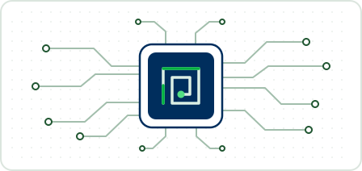
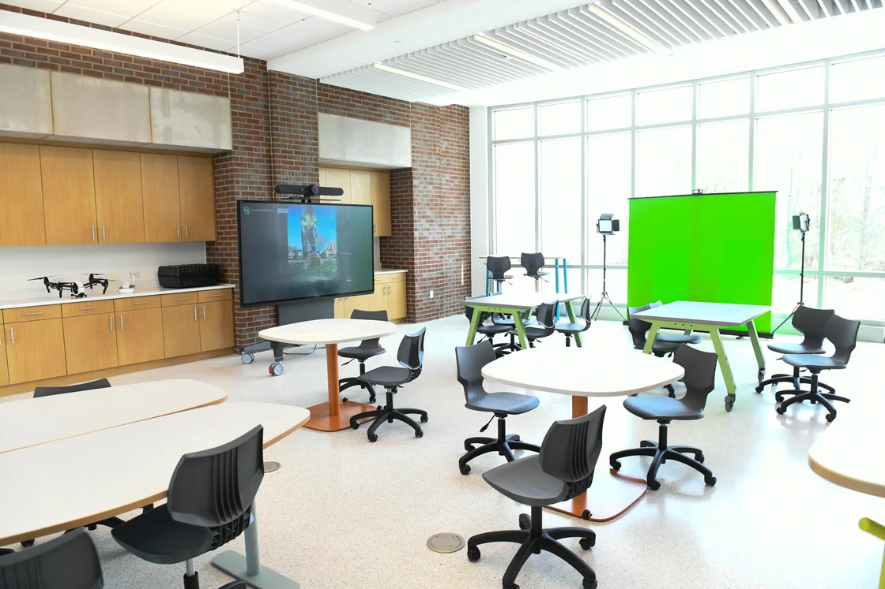

FEB192027
Phase 1 · Friday, February 19, 2027
Take a picture and solve a maze
Photograph the projected maze and find a valid path from Start to Finish. Phase 1 is not strictly timed. A correct solution earns +100 points.
Student robotics · Spring 2027
Design, build, and program a laser pointer turret to solve a projected maze your team has never seen before.
Student guide · Six pages
Hints, worked examples and questions for building your turret and reading the maze. It explains the ideas and leaves the design to your team.
Open the student guideThe challenge
Your team will get a projected maze it has never seen before. In Phase 1, photograph it and find a route from Start to Finish. In Phase 2, put that workflow to work on a new maze: use the turret’s two servos to steer the laser spot through the corridors without touching the walls.
Think of the challenge as two problems: finding a route in a camera image, then converting points on that route into servo positions. The arena scores the spot’s movement; checkpoints are hidden during the run. A wall contact costs points, but the run continues.
Design and 3D print the remaining structural parts of your turret. The mechanical layout is up to your team.
Form a team of 2–3 students. Every team member must be a Columbia State Community College student. AI tools are allowed, but every teammate must actively contribute to designing or building the project.
Camera reference
ArUco markers are black-and-white tags with numeric IDs. The three outside tags show where the maze sits in the camera image. Two tags inside the maze identify Start and Finish, even when those cells move between layouts.
| Marker ID | What it identifies |
|---|---|
| 0 | Outside the upper-left corner |
| 1 | Outside the upper-right corner |
| 2 | Outside the lower-right corner |
| 17 | Start cell |
| 8 | Finish cell |
Calibration hint: Keep the full maze and its markers in the camera frame. Use the outside tags as fixed reference points before looking for Start and Finish.
Practice maps
Use a practice map to test your camera, maze solver, or turret. The map includes the same ArUco markers as the arena.
To bring back a maze, choose its difficulty, type its map code and press Load code. The same difficulty and code always give the same maze.
Schedule
These are target dates and may change.
Competition location: FIS, Williamson Campus.
Complimentary pizza and snacks will be provided on both challenge dates.
Phase 1 · Friday, February 19, 2027
Photograph the projected maze and find a valid path from Start to Finish. Phase 1 is not strictly timed. A correct solution earns +100 points.
Phase 2 · Friday, March 19, 2027
Each team has up to 5 minutes to calibrate on a sample maze. When the countdown ends and the challenge maze is revealed, start your program with a single button press. Your software must then solve the maze and guide the laser automatically. Runs are scored on checkpoints, completion, time, and wall contacts.

Teams process camera images and plan routes on a local laptop, with an Arduino used solely to control the servos and switch the laser. The camera connects directly to that laptop. All competition processing must run on the team’s on-site equipment; cloud processing and remote assistance are not permitted during the challenge.
In Phase 2, each team is allowed up to 5 minutes to set up and calibrate its equipment using a sample maze.
When the countdown ends and the challenge maze is revealed, each team must start its maze-solving program with a single button press. The software must then find the route and steer the laser automatically. Team members may not draw the route, enter waypoints, or steer the turret by hand. AI tools are allowed during development, and each teammate must actively contribute to designing or building the project.
Build it to come apart. Your turret should be capable of being disassembled, so the servos and Arduino can be recovered for future projects.
Scoring
Phase 1 awards +100 points for a valid solution. The rules here apply to the Phase 2 arena run.
10 checkpoints in order (+500), Finish (+200), 12 seconds (+190), and one wall contact (−50).
| Event | Points | How it works |
|---|---|---|
| Hidden checkpoint | +50 each | Ten checkpoints along the correct path. Each counts once. |
| Finish | +200 | Awarded when the laser spot reaches Finish. |
| Time bonus | Up to +250 | Earned only by crossing all ten checkpoints in order (1–10) on the first visit to each, then reaching Finish. The bonus drops by 5 points per full second, to a minimum of zero. |
| Wall contact | −50, −100, −200… | Each new contact doubles the previous penalty, with no cap. A hit does not end the run. |
The Phase 2 run score cannot drop below zero.
Every participant receives a certificate of participation. Feature your RoboChargers project on your résumé or in your portfolio to show what you designed, programmed, or tested.
$300 cash prize for the team, plus a winner’s certificate for each team member.
Video demos
See the turret concept from every angle, then watch the same simulated maze run live and in replay.
3D turret mockup · 6 seconds
See how two geared servos aim the pointer left and right, and up and down. This mockup illustrates one possible layout for the 3D printed parts.
Live view · 15 seconds
Watch the red spot cut a turn too early and cross the inside wall before continuing. During the run, only the current spot is visible; results appear at Finish.
Replay · 15 seconds
The replay shows exactly where the laser cut the corner. A ring marks the wall crossing, the score drops by 50 points, and the run continues to Finish.
Starting from scratch is welcome. Visit Columbia State’s Innovation Lab on the Williamson campus to explore the space and see what you can make. A first print can be as simple as one bracket for your turret.
